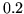

Increase the number of non-defunct mixture components in each pdf in the itemList to m (when m is just a number) or by m (when m is a number preceeded by a + sign. A defunct mixture is one for which the weight has fallen below MINMIX. This command works in two steps. Firstly, the weight of each mixture in each pdf is checked. If any defunct mixtures are discovered, then each is successively replaced by a non-defunct mixture component until either the required total number of non-defunct mixtures is reached or there are no defunct mixtures left. This replacement works by first deleting the defunct mixture and then finding the mixture with the largest weight and splitting it. The split operation is as follows. The weight of the mixture component is first halved and then the mixture is cloned. The two identical mean vectors are then perturbed by adding  standard deviations to one and subtracting the same amount from the other.
In the second step, the mixture component with the largest weight is split as above. This is repeated until the required number of mixture components are obtained. Whenever, a mixture is split, a count is incremented for that mixture so that splitting occurs evenly across the mixtures. Furthermore, a mixture whose gconst value falls more than four standard deviations below the mean is not split.
As an example, the command
MU 6 {*-aa+*.state[3].mix}
would increase the number of mixture components in state 3
of all triphones of aa to 6.